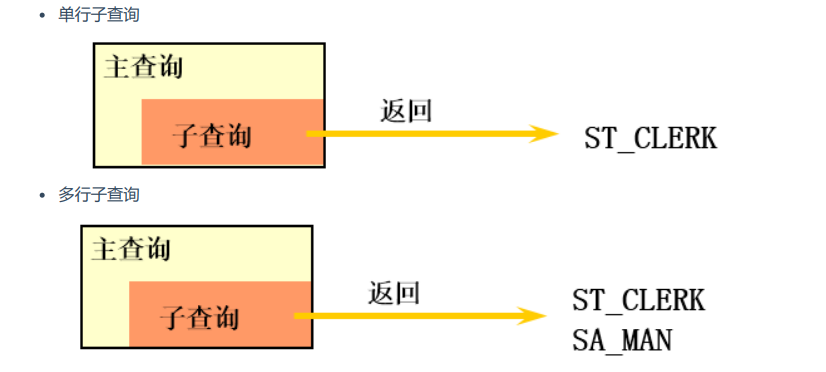
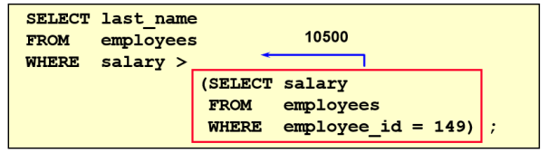
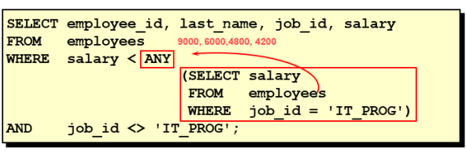
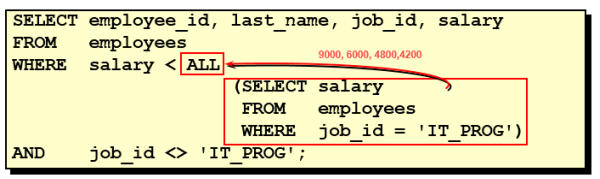
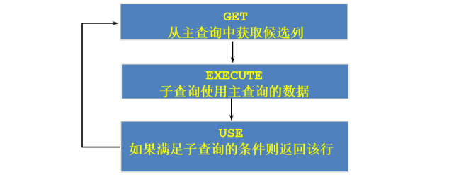
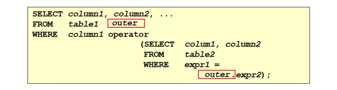
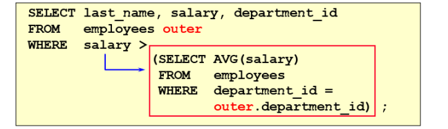

子查询指一个查询语句嵌套在另一个查询语句内部的查询，这个特性从MySQL 4.1开始引入。 SQL 中子查询的使用大大增强了 SELECT 查询的能力，因为很多时候查询需要从结果集中获取数据，或者 需要从同一个表中先计算得出一个数据结果，然后与这个数据结果（可能是某个标量，也可能是某个集合）进行比较。
1. 需求分析与问题解决
1.1 查询谁的工资比Abel高？
# 子查询
SELECT last_name,salary
FROM employees
WHERE salary > (
SELECT salary
FROM employees
WHERE last_name = 'Abel'
);
1.2 子查询的基本使用
子查询的基本语法结构：
- 子查询（内查询）在主查询之前一次执行完成。
- 子查询的结果被主查询（外查询）使用 。
- 注意事项 :
- 子查询要包含在括号内
- 将子查询放在比较条件的右侧
- 单行操作符对应单行子查询，多行操作符对应多行子查询
1.3 子查询的分类
分类方式1： 我们按内查询的结果返回一条还是多条记录，将子查询分为 单行子查询 、 多行子查询 。

分类方式2： 我们按内查询是否被执行多次，将子查询划分为 相关(或关联)子查询 和 不相关(或非关联)子查询 。
子查询从数据表中查询了数据结果，如果这个数据结果只执行一次，然后这个数据结果作为主查询的条 件进行执行，那么这样的子查询叫做不相关子查询。
同样，如果子查询需要执行多次，即采用循环的方式，先从外部查询开始，每次都传入子查询进行查 询，然后再将结果反馈给外部，这种嵌套的执行方式就称为相关子查询。
2. 单行子查询
2.1 单行比较操作符
| 操作符 | 含义 |
|---|---|
| = | equal to |
| > | greater than |
| >= | greater than or equal to |
| < | less than |
| <= | less than or equal to |
| <> | not equal to |
2.2 代码示例
题目：查询工资大于149号员工工资的员工的信息

题目：返回job_id与141号员工相同，salary比143号员工多的员工姓名，job_id和工资
SELECT last_name, job_id, salary
FROM employees
WHERE job_id =
(SELECT job_id
FROM employees
WHERE employee_id = 141)
AND salary >
(SELECT salary
FROM employees
WHERE employee_id = 143);
题目：返回公司工资最少的员工的last_name,job_id和salary
SELECT last_name, job_id, salary
FROM employees
WHERE salary =
(SELECT MIN(salary)
FROM employees);
题目：查询与141号或174号员工的manager_id和department_id相同的其他员工的employee_id， manager_id，department_id
实现方式1：不成对比较
SELECT employee_id, manager_id, department_id
FROM employees
WHERE manager_id IN
(SELECT manager_id
FROM employees
WHERE employee_id IN (174,141))
AND department_id IN
(SELECT department_id
FROM employees
WHERE employee_id IN (174,141))
AND employee_id NOT IN(174,141);
实现方式2：成对比较
SELECT employee_id, manager_id, department_id
FROM employees
WHERE (manager_id, department_id) IN
(SELECT manager_id, department_id
FROM employees
WHERE employee_id IN (141,174))
AND employee_id NOT IN (141,174);
2.3 HAVING 中的子查询
首先执行子查询。 向主查询中的HAVING 子句返回结果。
题目：查询最低工资大于110号部门最低工资的部门id和其最低工资
SELECT department_id, MIN(salary)
FROM employees
GROUP BY department_id
HAVING MIN(salary) >
(SELECT MIN(salary)
FROM employees
WHERE department_id = 110);
2.4 CASE中的子查询
在CASE表达式中使用单列子查询：
题目：显式员工的employee_id,last_name和location。其中，若员工department_id与location_id为1800 的department_id相同，则location为’Canada’，其余则为’USA’。
SELECT employee_id, last_name,
(CASE department_id
WHEN
(SELECT department_id FROM departments
WHERE location_id = 1800)
THEN 'Canada' ELSE 'USA' END) location
FROM employees;
2.5 子查询中的空值问题
SELECT last_name, job_id
FROM employees
WHERE job_id =
(SELECT job_id
FROM employees
WHERE last_name = 'Haas');
Empty set
子查询不返回任何行
2.6 非法使用子查询
SELECT employee_id, last_name
FROM employees
WHERE salary =
(SELECT MIN(salary)
FROM employees
GROUP BY department_id);
多行子查询使用单行比较符
3. 多行子查询
也称为集合比较子查询
- 内查询返回多行
- 使用多行比较操作符
3.1 多行比较操作符
| 操作符 | 说明 |
|---|---|
| IN | 等于列表中任意一个 |
| ANY | 需要和单行比较操作符一起使用，和子查询返回的某一个值比较 |
| ALL | 需要和单行比较操作符一起使用，和子查询返回的所有值比较 |
| SOME | 实际上是ANY的别名，作用相同，一般常使用ANY |
体会 ANY 和 ALL 的区别
3.2 代码示例
题目：返回其它job_id中比job_id为IT_PROG部门任一工资低的员工的员工号、姓名、job_id 以及salary

SELECT employee_id,last_name,job_id,salary
FROM employees
WHERE salary <ANY(
SELECT salary
FROM employees
WHERE job_id = 'IT_PROG'
)
AND job_id <> 'IT_PROG';
+-------------+-------------+------------+--------+
| employee_id | last_name | job_id | salary |
+-------------+-------------+------------+--------+
| 110 | Chen | FI_ACCOUNT | 8200 |
| 111 | Sciarra | FI_ACCOUNT | 7700 |
| 112 | Urman | FI_ACCOUNT | 7800 |
| 113 | Popp | FI_ACCOUNT | 6900 |
| 115 | Khoo | PU_CLERK | 3100 |
| 116 | Baida | PU_CLERK | 2900 |
| 117 | Tobias | PU_CLERK | 2800 |
| 118 | Himuro | PU_CLERK | 2600 |
| 119 | Colmenares | PU_CLERK | 2500 |
| 120 | Weiss | ST_MAN | 8000 |
| 121 | Fripp | ST_MAN | 8200 |
| 122 | Kaufling | ST_MAN | 7900 |
| 123 | Vollman | ST_MAN | 6500 |
| 124 | Mourgos | ST_MAN | 5800 |
| 125 | Nayer | ST_CLERK | 3200 |
| 126 | Mikkilineni | ST_CLERK | 2700 |
| 127 | Landry | ST_CLERK | 2400 |
| 128 | Markle | ST_CLERK | 2200 |
| 129 | Bissot | ST_CLERK | 3300 |
| 130 | Atkinson | ST_CLERK | 2800 |
| 131 | Marlow | ST_CLERK | 2500 |
| 132 | Olson | ST_CLERK | 2100 |
| 133 | Mallin | ST_CLERK | 3300 |
| 134 | Rogers | ST_CLERK | 2900 |
| 135 | Gee | ST_CLERK | 2400 |
| 136 | Philtanker | ST_CLERK | 2200 |
| 137 | Ladwig | ST_CLERK | 3600 |
| 138 | Stiles | ST_CLERK | 3200 |
| 139 | Seo | ST_CLERK | 2700 |
| 140 | Patel | ST_CLERK | 2500 |
| 141 | Rajs | ST_CLERK | 3500 |
| 142 | Davies | ST_CLERK | 3100 |
| 143 | Matos | ST_CLERK | 2600 |
| 144 | Vargas | ST_CLERK | 2500 |
| 153 | Olsen | SA_REP | 8000 |
| 154 | Cambrault | SA_REP | 7500 |
| 155 | Tuvault | SA_REP | 7000 |
| 159 | Smith | SA_REP | 8000 |
| 160 | Doran | SA_REP | 7500 |
| 161 | Sewall | SA_REP | 7000 |
| 164 | Marvins | SA_REP | 7200 |
| 165 | Lee | SA_REP | 6800 |
| 166 | Ande | SA_REP | 6400 |
| 167 | Banda | SA_REP | 6200 |
| 171 | Smith | SA_REP | 7400 |
| 172 | Bates | SA_REP | 7300 |
| 173 | Kumar | SA_REP | 6100 |
| 175 | Hutton | SA_REP | 8800 |
| 176 | Taylor | SA_REP | 8600 |
| 177 | Livingston | SA_REP | 8400 |
| 178 | Grant | SA_REP | 7000 |
| 179 | Johnson | SA_REP | 6200 |
| 180 | Taylor | SH_CLERK | 3200 |
| 181 | Fleaur | SH_CLERK | 3100 |
| 182 | Sullivan | SH_CLERK | 2500 |
| 183 | Geoni | SH_CLERK | 2800 |
| 184 | Sarchand | SH_CLERK | 4200 |
| 185 | Bull | SH_CLERK | 4100 |
| 186 | Dellinger | SH_CLERK | 3400 |
| 187 | Cabrio | SH_CLERK | 3000 |
| 188 | Chung | SH_CLERK | 3800 |
| 189 | Dilly | SH_CLERK | 3600 |
| 190 | Gates | SH_CLERK | 2900 |
| 191 | Perkins | SH_CLERK | 2500 |
| 192 | Bell | SH_CLERK | 4000 |
| 193 | Everett | SH_CLERK | 3900 |
| 194 | McCain | SH_CLERK | 3200 |
| 195 | Jones | SH_CLERK | 2800 |
| 196 | Walsh | SH_CLERK | 3100 |
| 197 | Feeney | SH_CLERK | 3000 |
| 198 | OConnell | SH_CLERK | 2600 |
| 199 | Grant | SH_CLERK | 2600 |
| 200 | Whalen | AD_ASST | 4400 |
| 202 | Fay | MK_REP | 6000 |
| 203 | Mavris | HR_REP | 6500 |
| 206 | Gietz | AC_ACCOUNT | 8300 |
+-------------+-------------+------------+--------+
76 rows in set
题目：返回其它job_id中比job_id为‘IT_PROG’部门所有工资都低的员工的员工号、姓名、job_id以及 salary

SELECT employee_id ,last_name,job_id,salary
FROM employees
WHERE salary <ALL
(SELECT salary
FROM employees
WHERE job_id = 'IT_PROG')
AND job_id <> 'IT_PROG';
+-------------+-------------+----------+--------+
| employee_id | last_name | job_id | salary |
+-------------+-------------+----------+--------+
| 115 | Khoo | PU_CLERK | 3100 |
| 116 | Baida | PU_CLERK | 2900 |
| 117 | Tobias | PU_CLERK | 2800 |
| 118 | Himuro | PU_CLERK | 2600 |
| 119 | Colmenares | PU_CLERK | 2500 |
| 125 | Nayer | ST_CLERK | 3200 |
| 126 | Mikkilineni | ST_CLERK | 2700 |
| 127 | Landry | ST_CLERK | 2400 |
| 128 | Markle | ST_CLERK | 2200 |
| 129 | Bissot | ST_CLERK | 3300 |
| 130 | Atkinson | ST_CLERK | 2800 |
| 131 | Marlow | ST_CLERK | 2500 |
| 132 | Olson | ST_CLERK | 2100 |
| 133 | Mallin | ST_CLERK | 3300 |
| 134 | Rogers | ST_CLERK | 2900 |
| 135 | Gee | ST_CLERK | 2400 |
| 136 | Philtanker | ST_CLERK | 2200 |
| 137 | Ladwig | ST_CLERK | 3600 |
| 138 | Stiles | ST_CLERK | 3200 |
| 139 | Seo | ST_CLERK | 2700 |
| 140 | Patel | ST_CLERK | 2500 |
| 141 | Rajs | ST_CLERK | 3500 |
| 142 | Davies | ST_CLERK | 3100 |
| 143 | Matos | ST_CLERK | 2600 |
| 144 | Vargas | ST_CLERK | 2500 |
| 180 | Taylor | SH_CLERK | 3200 |
| 181 | Fleaur | SH_CLERK | 3100 |
| 182 | Sullivan | SH_CLERK | 2500 |
| 183 | Geoni | SH_CLERK | 2800 |
| 185 | Bull | SH_CLERK | 4100 |
| 186 | Dellinger | SH_CLERK | 3400 |
| 187 | Cabrio | SH_CLERK | 3000 |
| 188 | Chung | SH_CLERK | 3800 |
| 189 | Dilly | SH_CLERK | 3600 |
| 190 | Gates | SH_CLERK | 2900 |
| 191 | Perkins | SH_CLERK | 2500 |
| 192 | Bell | SH_CLERK | 4000 |
| 193 | Everett | SH_CLERK | 3900 |
| 194 | McCain | SH_CLERK | 3200 |
| 195 | Jones | SH_CLERK | 2800 |
| 196 | Walsh | SH_CLERK | 3100 |
| 197 | Feeney | SH_CLERK | 3000 |
| 198 | OConnell | SH_CLERK | 2600 |
| 199 | Grant | SH_CLERK | 2600 |
+-------------+-------------+----------+--------+
44 rows in set
题目：查询平均工资最低的部门id
#方式1：
SELECT department_id
FROM employees
GROUP BY department_id
HAVING AVG(salary) = (
SELECT MIN(avg_sal)
FROM (
SELECT AVG(salary) avg_sal
FROM employees
GROUP BY department_id
) dept_avg_sal
)
#方式2：
SELECT department_id
FROM employees
GROUP BY department_id
HAVING AVG(salary) <= ALL (
SELECT AVG(salary) avg_sal
FROM employees
GROUP BY department_id
);
+---------------+
| department_id |
+---------------+
| 50 |
+---------------+
1 row in set
3.3 空值问题
SELECT last_name
FROM employees
WHERE employee_id NOT IN (
SELECT manager_id
FROM employees
);
Empty set
4. 相关子查询
4.1 相关子查询执行流程
如果子查询的执行依赖于外部查询，通常情况下都是因为子查询中的表用到了外部的表，并进行了条件关联，因此每执行一次外部查询，子查询都要重新计算一次，这样的子查询就称之为 关联子查询 。
相关子查询按照一行接一行的顺序执行，主查询的每一行都执行一次子查询。


说明：子查询中使用主查询中的列
4.2 代码示例
题目：查询员工中，工资大于本部门平均工资的员工的last_name,salary和其department_id
方式一：相关子查询

方式二：在 FROM 中使用子查询
SELECT last_name,salary,e1.department_id
FROM employees e1,(
SELECT department_id,AVG(salary) dept_avg_sal
FROM employees
GROUP BY department_id) e2
WHERE e1.`department_id` = e2.department_id
AND e2.dept_avg_sal < e1.`salary`;
from型的子查询：子查询是作为from的一部分，子查询要用()引起来，并且要给这个子查询取别名， 把它当成一张“临时的虚拟的表”来使用。
在ORDER BY 中使用子查询：
题目：查询员工的id,salary,按照department_name 排序
SELECT employee_id,salary
FROM employees e
ORDER BY (
SELECT department_name
FROM departments d
WHERE e.`department_id` = d.`department_id`
) ASC;
题目：若employees表中employee_id与job_history表中employee_id相同的数目不小于2，输出这些相同 id的员工的employee_id,last_name和其job_id
SELECT e.employee_id, last_name,e.job_id
FROM employees e
WHERE 2 <= (SELECT COUNT(*)
FROM job_history
WHERE employee_id = e.employee_id);
+-------------+-----------+---------+
| employee_id | last_name | job_id |
+-------------+-----------+---------+
| 101 | Kochhar | AD_VP |
| 176 | Taylor | SA_REP |
| 200 | Whalen | AD_ASST |
+-------------+-----------+---------+
3 rows in set
4.3 EXISTS 与 NOT EXISTS关键字
关联子查询通常也会和 EXISTS操作符一起来使用，用来检查在子查询中是否存在满足条件的行。
如果在子查询中不存在满足条件的行：
- 条件返回 FALSE
- 继续在子查询中查找
如果在子查询中存在满足条件的行：
- 不在子查询中继续查找
- 条件返回 TRUE
NOT EXISTS关键字表示如果不存在某种条件，则返回TRUE，否则返回FALSE。
题目：查询公司管理者的employee_id，last_name，job_id，department_id信息
方法一：
SELECT employee_id, last_name, job_id, department_id
FROM employees e1
WHERE EXISTS ( SELECT *
FROM employees e2
WHERE e2.manager_id =
e1.employee_id);
方式二：自连接
SELECT DISTINCT e1.employee_id, e1.last_name, e1.job_id, e1.department_id
FROM employees e1 JOIN employees e2
WHERE e1.employee_id = e2.manager_id;
方式三：
SELECT employee_id,last_name,job_id,department_id
FROM employees
WHERE employee_id IN (
SELECT DISTINCT manager_id
FROM employees
);
题目：查询departments表中，不存在于employees表中的部门的department_id和department_name
SELECT department_id, department_name
FROM departments d
WHERE NOT EXISTS (SELECT 'X'
FROM employees
WHERE department_id = d.department_id);
5.课后习题
- 查询和Zlotkey相同部门的员工姓名和工资
SELECT last_name ,salary,department_id
FROM employees e
WHERE e.department_id IN (SELECT department_id
FROM employees
WHERE last_name = 'Zlotkey');
+------------+--------+---------------+
| last_name | salary | department_id |
+------------+--------+---------------+
| Russell | 14000 | 80 |
| Partners | 13500 | 80 |
| Errazuriz | 12000 | 80 |
| Cambrault | 11000 | 80 |
| Zlotkey | 10500 | 80 |
| Tucker | 10000 | 80 |
| Bernstein | 9500 | 80 |
| Hall | 9000 | 80 |
| Olsen | 8000 | 80 |
| Cambrault | 7500 | 80 |
| Tuvault | 7000 | 80 |
| King | 10000 | 80 |
| Sully | 9500 | 80 |
| McEwen | 9000 | 80 |
| Smith | 8000 | 80 |
| Doran | 7500 | 80 |
| Sewall | 7000 | 80 |
| Vishney | 10500 | 80 |
| Greene | 9500 | 80 |
| Marvins | 7200 | 80 |
| Lee | 6800 | 80 |
| Ande | 6400 | 80 |
| Banda | 6200 | 80 |
| Ozer | 11500 | 80 |
| Bloom | 10000 | 80 |
| Fox | 9600 | 80 |
| Smith | 7400 | 80 |
| Bates | 7300 | 80 |
| Kumar | 6100 | 80 |
| Abel | 11000 | 80 |
| Hutton | 8800 | 80 |
| Taylor | 8600 | 80 |
| Livingston | 8400 | 80 |
| Johnson | 6200 | 80 |
+------------+--------+---------------+
- 查询工资比公司平均工资高的员工的员工号、姓名和工资
SELECT employee_id ,last_name,salary
FROM employees
WHERE salary >(
SELECT AVG(salary)
FROM employees
);
+-------------+------------+--------+
| employee_id | last_name | salary |
+-------------+------------+--------+
| 100 | King | 24000 |
| 101 | Kochhar | 17000 |
| 102 | De Haan | 17000 |
| 103 | Hunold | 9000 |
| 108 | Greenberg | 12000 |
| 109 | Faviet | 9000 |
| 110 | Chen | 8200 |
| 111 | Sciarra | 7700 |
| 112 | Urman | 7800 |
| 113 | Popp | 6900 |
| 114 | Raphaely | 11000 |
| 120 | Weiss | 8000 |
| 121 | Fripp | 8200 |
| 122 | Kaufling | 7900 |
| 123 | Vollman | 6500 |
| 145 | Russell | 14000 |
| 146 | Partners | 13500 |
| 147 | Errazuriz | 12000 |
| 148 | Cambrault | 11000 |
| 149 | Zlotkey | 10500 |
| 150 | Tucker | 10000 |
| 151 | Bernstein | 9500 |
| 152 | Hall | 9000 |
| 153 | Olsen | 8000 |
| 154 | Cambrault | 7500 |
| 155 | Tuvault | 7000 |
| 156 | King | 10000 |
| 157 | Sully | 9500 |
| 158 | McEwen | 9000 |
| 159 | Smith | 8000 |
| 160 | Doran | 7500 |
| 161 | Sewall | 7000 |
| 162 | Vishney | 10500 |
| 163 | Greene | 9500 |
| 164 | Marvins | 7200 |
| 165 | Lee | 6800 |
| 168 | Ozer | 11500 |
| 169 | Bloom | 10000 |
| 170 | Fox | 9600 |
| 171 | Smith | 7400 |
| 172 | Bates | 7300 |
| 174 | Abel | 11000 |
| 175 | Hutton | 8800 |
| 176 | Taylor | 8600 |
| 177 | Livingston | 8400 |
| 178 | Grant | 7000 |
| 201 | Hartstein | 13000 |
| 203 | Mavris | 6500 |
| 204 | Baer | 10000 |
| 205 | Higgins | 12000 |
| 206 | Gietz | 8300 |
+-------------+------------+--------+
51 rows in set
- 选择工资大于所有
JOB_ID = 'SA_MAN'的员工工资的员工的last_name，job_id，salary
SELECT last_name,job_id,salary
FROM employees
WHERE salary > ALL (
SELECT salary
FROM employees
WHERE job_id = 'SA_MAN'
)
+-----------+---------+--------+
| last_name | job_id | salary |
+-----------+---------+--------+
| King | AD_PRES | 24000 |
| Kochhar | AD_VP | 17000 |
| De Haan | AD_VP | 17000 |
+-----------+---------+--------+
3 rows in set
- 查询和姓名中包含字母u的员工在相同部门的员工的员工号、姓名
SELECT employee_id,last_name
FROM employees
WHERE department_id IN (
SELECT department_id
FROM employees
WHERE last_name LIKE "%u%"
) ;
+-------------+-------------+
| employee_id | last_name |
+-------------+-------------+
| 103 | Hunold |
| 104 | Ernst |
| 105 | Austin |
| 106 | Pataballa |
| 107 | Lorentz |
| 108 | Greenberg |
| 109 | Faviet |
| 110 | Chen |
| 111 | Sciarra |
| 112 | Urman |
| 113 | Popp |
| 114 | Raphaely |
| 115 | Khoo |
| 116 | Baida |
| 117 | Tobias |
| 118 | Himuro |
| 119 | Colmenares |
| 120 | Weiss |
| 121 | Fripp |
| 122 | Kaufling |
| 123 | Vollman |
| 124 | Mourgos |
| 125 | Nayer |
| 126 | Mikkilineni |
| 127 | Landry |
| 128 | Markle |
| 129 | Bissot |
| 130 | Atkinson |
| 131 | Marlow |
| 132 | Olson |
| 133 | Mallin |
| 134 | Rogers |
| 135 | Gee |
| 136 | Philtanker |
| 137 | Ladwig |
| 138 | Stiles |
| 139 | Seo |
| 140 | Patel |
| 141 | Rajs |
| 142 | Davies |
| 143 | Matos |
| 144 | Vargas |
| 180 | Taylor |
| 181 | Fleaur |
| 182 | Sullivan |
| 183 | Geoni |
| 184 | Sarchand |
| 185 | Bull |
| 186 | Dellinger |
| 187 | Cabrio |
| 188 | Chung |
| 189 | Dilly |
| 190 | Gates |
| 191 | Perkins |
| 192 | Bell |
| 193 | Everett |
| 194 | McCain |
| 195 | Jones |
| 196 | Walsh |
| 197 | Feeney |
| 198 | OConnell |
| 199 | Grant |
| 145 | Russell |
| 146 | Partners |
| 147 | Errazuriz |
| 148 | Cambrault |
| 149 | Zlotkey |
| 150 | Tucker |
| 151 | Bernstein |
| 152 | Hall |
| 153 | Olsen |
| 154 | Cambrault |
| 155 | Tuvault |
| 156 | King |
| 157 | Sully |
| 158 | McEwen |
| 159 | Smith |
| 160 | Doran |
| 161 | Sewall |
| 162 | Vishney |
| 163 | Greene |
| 164 | Marvins |
| 165 | Lee |
| 166 | Ande |
| 167 | Banda |
| 168 | Ozer |
| 169 | Bloom |
| 170 | Fox |
| 171 | Smith |
| 172 | Bates |
| 173 | Kumar |
| 174 | Abel |
| 175 | Hutton |
| 176 | Taylor |
| 177 | Livingston |
| 179 | Johnson |
+-------------+-------------+
96 rows in set
- 查询在部门的location_id为1700的部门工作的员工的员工号
SELECT employee_id
FROM employees
WHERE department_id IN (
SELECT department_id
FROM departments
WHERE location_id =1700
);
+-------------+
| employee_id |
+-------------+
| 200 |
| 114 |
| 115 |
| 116 |
| 117 |
| 118 |
| 119 |
| 100 |
| 101 |
| 102 |
| 108 |
| 109 |
| 110 |
| 111 |
| 112 |
| 113 |
| 205 |
| 206 |
+-------------+
18 rows in set
- 查询管理者为King的手下员工的员工姓名和工资
SELECT last_name,salary
FROM employees
WHERE manager_id IN (
SELECT employee_id
FROM employees
WHERE last_name = 'King'
);
+-----------+--------+
| last_name | salary |
+-----------+--------+
| Kochhar | 17000 |
| De Haan | 17000 |
| Raphaely | 11000 |
| Weiss | 8000 |
| Fripp | 8200 |
| Kaufling | 7900 |
| Vollman | 6500 |
| Mourgos | 5800 |
| Russell | 14000 |
| Partners | 13500 |
| Errazuriz | 12000 |
| Cambrault | 11000 |
| Zlotkey | 10500 |
| Hartstein | 13000 |
+-----------+--------+
14 rows in set
- 查询工资最低的员工信息：last_name，salary
SELECT last_name,salary
FROM employees
WHERE salary =(
SELECT MIN(salary)
FROM employees
);
+-----------+--------+
| last_name | salary |
+-----------+--------+
| Olson | 2100 |
+-----------+--------+
1 row in set
- 查询平均工资最低的部门信息
SELECT *
FROM departments
WHERE department_id =
(SELECT department_id
FROM employees
GROUP BY department_id
HAVING AVG(salary)<= ALL (SELECT AVG(salary)
FROM employees
GROUP BY department_id));
+---------------+-----------------+------------+-------------+
| department_id | department_name | manager_id | location_id |
+---------------+-----------------+------------+-------------+
| 50 | Shipping | 121 | 1500 |
+---------------+-----------------+------------+-------------+
1 row in set
- 查询平均工资最低的部门信息和该部门的平均工资
SELECT d.*,(SELECT AVG(salary) FROM employees WHERE department_id = d.`department_id`) avg_sal
FROM departments d
WHERE department_id =
(SELECT department_id
FROM employees
GROUP BY department_id
HAVING AVG(salary)<= ALL (SELECT AVG(salary)
FROM employees
GROUP BY department_id));
+---------------+-----------------+------------+-------------+-------------+
| department_id | department_name | manager_id | location_id | avg_sal |
+---------------+-----------------+------------+-------------+-------------+
| 50 | Shipping | 121 | 1500 | 3475.555556 |
+---------------+-----------------+------------+-------------+-------------+
1 row in set
10.查询平均工资最高的job信息
SELECT *
FROM jobs
WHERE job_id = (
SELECT job_id
FROM employees
GROUP BY job_id
HAVING AVG(salary) = (SELECT MAX(avg_sal)
FROM (SELECT AVG(salary) avg_sal
FROM employees
GROUP BY (job_id)) t ));
+---------+-----------+------------+------------+
| job_id | job_title | min_salary | max_salary |
+---------+-----------+------------+------------+
| AD_PRES | President | 20000 | 40000 |
+---------+-----------+------------+------------+
1 row in set
- 查询平均工资高于公司平均工资的部门有哪些？
SELECT department_id
FROM employees
WHERE department_id IS NOT NULL
GROUP BY department_id
HAVING AVG(salary) > (SELECT AVG(salary)
FROM employees
);
+---------------+
| department_id |
+---------------+
| 20 |
| 40 |
| 70 |
| 80 |
| 90 |
| 100 |
| 110 |
+---------------+
7 rows in set
- 查询公司中所有manager的详细信息
SELECT last_name,employee_id,job_id,department_id
FROM employees
WHERE employee_id IN (SELECT DISTINCT manager_id
FROM employees);
+-----------+-------------+---------+---------------+
| last_name | employee_id | job_id | department_id |
+-----------+-------------+---------+---------------+
| King | 100 | AD_PRES | 90 |
| Kochhar | 101 | AD_VP | 90 |
| De Haan | 102 | AD_VP | 90 |
| Hunold | 103 | IT_PROG | 60 |
| Greenberg | 108 | FI_MGR | 100 |
| Raphaely | 114 | PU_MAN | 30 |
| Weiss | 120 | ST_MAN | 50 |
| Fripp | 121 | ST_MAN | 50 |
| Kaufling | 122 | ST_MAN | 50 |
| Vollman | 123 | ST_MAN | 50 |
| Mourgos | 124 | ST_MAN | 50 |
| Russell | 145 | SA_MAN | 80 |
| Partners | 146 | SA_MAN | 80 |
| Errazuriz | 147 | SA_MAN | 80 |
| Cambrault | 148 | SA_MAN | 80 |
| Zlotkey | 149 | SA_MAN | 80 |
| Hartstein | 201 | MK_MAN | 20 |
| Higgins | 205 | AC_MGR | 110 |
+-----------+-------------+---------+---------------+
18 rows in set
- 比较每个部门的最高工资，找出其中的最低工资是多少?
SELECT department_id
FROM employees
GROUP BY department_id
HAVING MAX(salary) = (SELECT MIN(max_sal)
FROM
(SELECT MAX(salary) max_sal
FROM employees
GROUP BY department_id) t);
- 查询平均工资最高的部门，其manager的详细信息：last_name，department_id，email，salary
SELECT last_name,department_id,email,salary
FROM employees
WHERE employee_id IN (
SELECT DISTINCT manager_id
FROM employees
WHERE department_id = (
SELECT department_id
FROM employees
GROUP BY department_id
HAVING AVG(salary) = (SELECT MAX(avg_sal)
FROM (
SELECT AVG(salary) avg_sal
FROM employees e
GROUP BY department_id
) t)));
+-----------+---------------+-------+--------+
| last_name | department_id | email | salary |
+-----------+---------------+-------+--------+
| King | 90 | SKING | 24000 |
+-----------+---------------+-------+--------+
1 row in set
- 查询部门的部门号，其中不包括
job_id为ST_CLERK的部门号
SELECT department_id
FROM departments
WHERE department_id NOT IN (
SELECT DISTINCT department_id
FROM employees
WHERE job_id = "ST_CLERK");
+---------------+
| department_id |
+---------------+
| 10 |
| 20 |
| 30 |
| 40 |
| 60 |
| 70 |
| 80 |
| 90 |
| 100 |
| 110 |
| 120 |
| 130 |
| 140 |
| 150 |
| 160 |
| 170 |
| 180 |
| 190 |
| 200 |
| 210 |
| 220 |
| 230 |
| 240 |
| 250 |
| 260 |
| 270 |
+---------------+
26 rows in set
- 选择所有没有管理者员工的last_name
SELECT last_name
FROM employees
WHERE manager_id IS NULL;
+-----------+
| last_name |
+-----------+
| King |
+-----------+
1 row in set
- 查询员工号、姓名、雇佣时间、工资，其中员工的管理者为
De Haan
SELECT employee_id ,last_name,hire_date,salary
FROM employees
WHERE manager_id IN(
SELECT employee_id
FROM employees
WHERE last_name = "De Haan");
+-------------+-----------+------------+--------+
| employee_id | last_name | hire_date | salary |
+-------------+-----------+------------+--------+
| 103 | Hunold | 1990-01-03 | 9000 |
+-------------+-----------+------------+--------+
1 row in set
- 查询工资比本部门平均工资高的员工的员工号、姓名、工资（相关子查询）
SELECT employee_id ,last_name,salary
FROM employees e1
WHERE salary >(SELECT AVG(salary)
FROM employees e2
WHERE e1.`department_id` = e2.`department_id`
);
+-------------+-----------+--------+
| employee_id | last_name | salary |
+-------------+-----------+--------+
| 100 | King | 24000 |
| 103 | Hunold | 9000 |
| 104 | Ernst | 6000 |
| 108 | Greenberg | 12000 |
| 109 | Faviet | 9000 |
| 114 | Raphaely | 11000 |
| 120 | Weiss | 8000 |
| 121 | Fripp | 8200 |
| 122 | Kaufling | 7900 |
| 123 | Vollman | 6500 |
| 124 | Mourgos | 5800 |
| 137 | Ladwig | 3600 |
| 141 | Rajs | 3500 |
| 145 | Russell | 14000 |
| 146 | Partners | 13500 |
| 147 | Errazuriz | 12000 |
| 148 | Cambrault | 11000 |
| 149 | Zlotkey | 10500 |
| 150 | Tucker | 10000 |
| 151 | Bernstein | 9500 |
| 152 | Hall | 9000 |
| 156 | King | 10000 |
| 157 | Sully | 9500 |
| 158 | McEwen | 9000 |
| 162 | Vishney | 10500 |
| 163 | Greene | 9500 |
| 168 | Ozer | 11500 |
| 169 | Bloom | 10000 |
| 170 | Fox | 9600 |
| 174 | Abel | 11000 |
| 184 | Sarchand | 4200 |
| 185 | Bull | 4100 |
| 188 | Chung | 3800 |
| 189 | Dilly | 3600 |
| 192 | Bell | 4000 |
| 193 | Everett | 3900 |
| 201 | Hartstein | 13000 |
| 205 | Higgins | 12000 |
+-------------+-----------+--------+
38 rows in set
- 查询部门人数大于5的部门名称
SELECT department_name
FROM departments d
WHERE 5 <(
SELECT COUNT(*)
FROM employees e
WHERE d.department_id = e.department_id
);
+-----------------+
| department_name |
+-----------------+
| Purchasing |
| Shipping |
| Sales |
| Finance |
+-----------------+
4 rows in set
- 查询每个国家下的部门个数大于2的国家编号（相关子查询）
SELECT country_id
FROM locations l
WHERE 2 <(
SELECT COUNT(*)
FROM departments d
WHERE l.location_id = d.location_id
);
+------------+
| country_id |
+------------+
| US |
+------------+
1 row in set